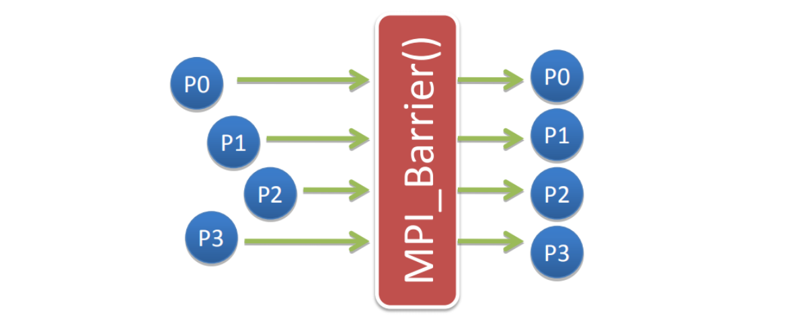
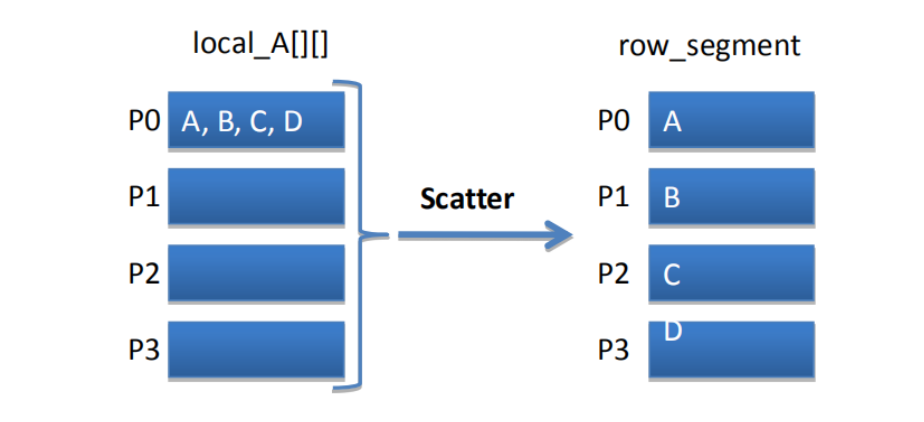
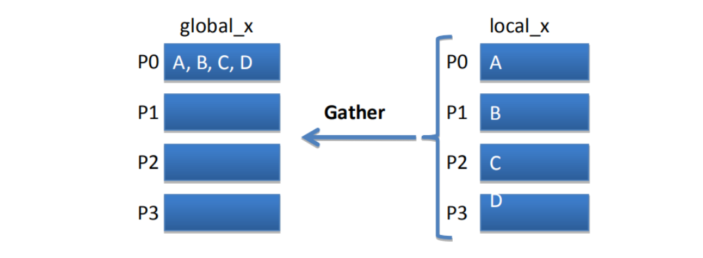
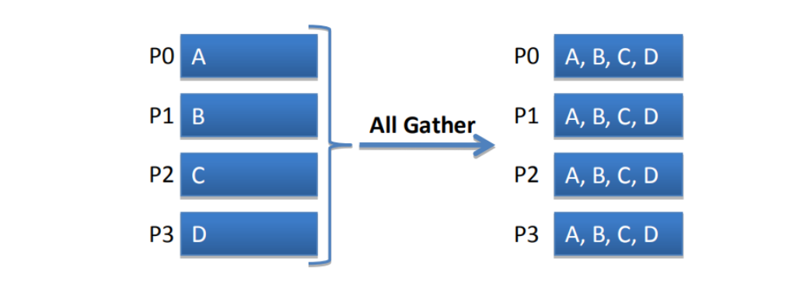
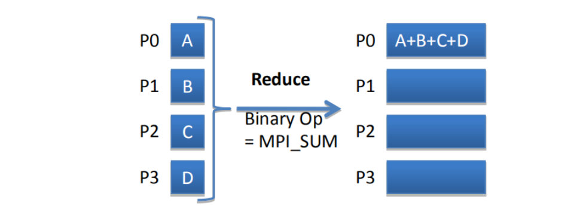
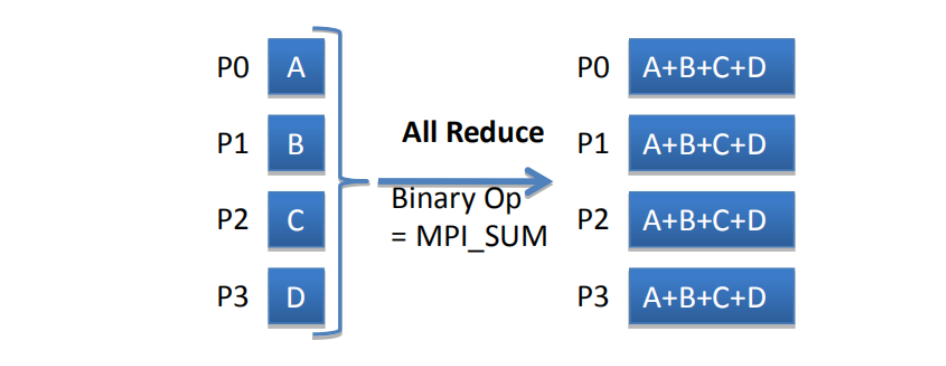

Collective Communication
Synchronization
MPI_Barrier

1 | int MPI_Barrier(MPI_Comm comm) |
Communication
MPI_Bcast
A collective communication call where a single process sends the same data contained in the message to every process in the communicator.
1 | int MPI_Bcast(void* message, |
MPI_Scatter

MPI_Scatter splits the data referenced by the sendbuf on the process with rank root into p segments each of which consists of send_count elements of type send_type.
1 | int MPI_Scatter(void* sendbuf, |
MPI_Gather

MPI_Gather collects the data referenced by sendbuf from each process in the communicator comm, and stores the data in process rank order on the process with rank root in the location referenced by recvbuf.
1 | int MPI_Gather(void* sendbuf, |
MPI_Allgather

MPI_Allgather gathers the content from the send buffer (sendbuf) on each process.
1 | int MPI_Allgather(void* sendbuf, |
Reduction
MPI_Reduce

1 | int MPI_Reduce(void* operand, |
MPI Binary Operations
| Operation Name | Meaning |
|---|---|
| MPI_MAX | Maximum |
| MPI_MIN | Minimum |
| MPI_SUM | Sum |
| MPI_PROD | Product |
| MPI_LAND | Logical And |
| MPI_BAND | Bitwise And |
| MPI_LOR | Logical Or |
| MPI_BOR | Bitwise Or |
| MPI_LXOR | Logical XOR |
| MPI_BXOR | Bitwise XOR |
| MPI_MAXLOC | Maximum and location of max. |
| MPI_MINLOC | Maximum and location of min. |
MPI_Allreduce

1 | int MPI_Allreduce(void* sendbuf, |